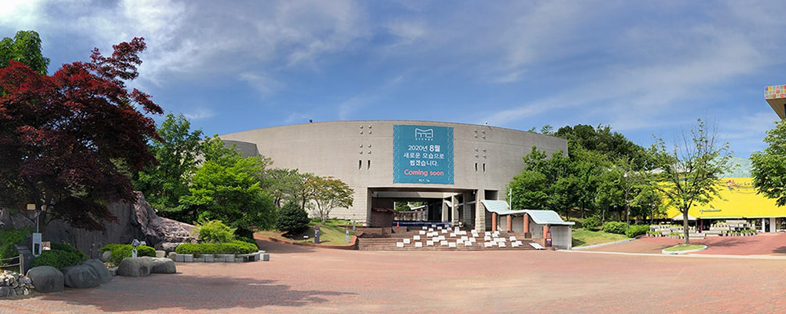
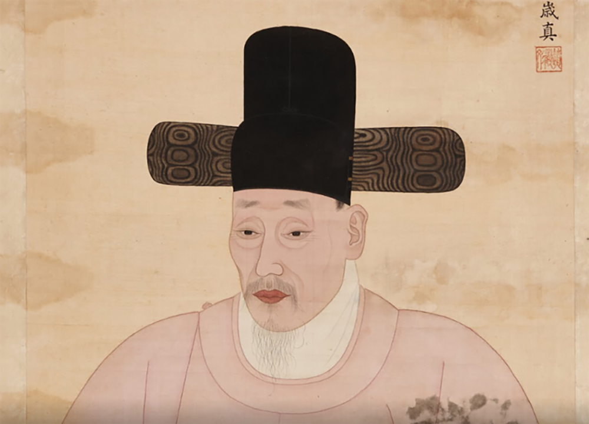

경기도 박물관
인사말
경기도 박물관을 찾아주신 여러분 진심으로 환영합니다.
저희 경기도박물관은 “경기도”의 역사와 문화의 전통을 밝히고 계승하면서 미래를 준비하고자 도민 여러분의 뜻으로 마련되었습니다. 1996년 개관이래 박물관에서는 유물의 수집 및 전시, 학술연구, 사회교육을 통해 여러분이 즐겨 찾는 문화사랑방의 역할을 담당하고자 많은 노력을 기울여 왔습니다. 그러나 이제 급속하게 변화하는 오늘날, 박물관도 능동적으로 눈높이를 맞추지 않으면 낙오될 위기라 하지 않을 수 없습니다.
그래서 우리는 지금까지 문화의 보존중심에서 과감하게 탈피하여 문화창조와 문화복지는 물론 다문화가족을 위해 창조성과 전문성을 더욱 높이고, 나아가 현장을 강화하여 관람객 여러분을 중심으로 한 복합문화공간으로 거듭나는 노력을 기울일 것입니다. 아울러 변화하는 내외의 경향을 항상 주시하여 앞서갈 수 있도록 최상의 서비스를 제공할 것입니다. 그리하여 박물관을 찾는 여러분이 웃고 즐기고, 더 많이 배워가는 열린 공간으로 다가갈 것입니다. 아무쪼록 저희 박물관을 자주 찾아주시길 부탁드리며 언제나 여러분과 함께 할 것임을 약속드립니다.
조관빈, 옹공찬 사대부의 모습으로 우리앞에 서다
- 기간 : 2018.01.01(월) ~ 2020.12.31(목)
- 장소 : Google Arts & Culture
경기도박물관은 이번 전시에서 조선 영조 대에 홍문관 대제학을 지낸 조관빈의 초상화를 처음으로 선보인다. 초상화는 관복본의 전신상을 비롯하여 모두 6점으로, 2016년 6월에 조관빈 초상을 기증받은 후 꼬박 1년 반 만이다. 전시를 통해 이 초상화가 박물관에 기증된 과정과 보존처리 작업 내용을 생생하게 엿볼 수 있으며, 조관빈이 직접 지은 화상찬을 통해 조선시대 사대부로써의 그의 삶을 조명해 보고자 한다.
기증자 조범식 선생님 댁을 방문했던 그 날은 아직도 기억이 생생하다. 작년 여름 한 통의 전화를 받았다. 선조의 초상화를 집에서 보관하고 있는데 상태가 매우 좋지 않다는 내용이었다. 한달음에 달려가 도착한 선생님 댁의 방과 거실에는 조관빈의 초상화 여러 점이 펼쳐져 있었다. 떨리는 마음으로 초상화를 살펴보았다. 또렷한 눈동자, 붉은 입술, 듬성한 수염의 노신(老臣)은 바로 어제 그려진 듯 너무나도 선명했다. 수 백 년이 지난 지금, 조관빈, 그 분이 우리 앞에 있는 착각이 들 정도였다. 순간 경외롭고 낯선 공기가 느껴졌다. 세상에 아직 공개된 적이 없는 조관빈의 초상을 마주하는 순간이었다.
관람안내
| 구분 | 5월 ~ 10월 | 11월 ~ 4월 |
|---|---|---|
| 관람시간 | 10:00 - 18:00 | 10:00 - 17:00 |
| 휴관일 | 매주 월요일, 매년 1월1일, 설날 및 추석 당일 | |
| 관람료 | 무료 | |
| 안내사항 | 전시 관람을 위한 박물관 입장은 폐관으로부터 1시간 전까지 가능합니다. | |
관람시 유의사항
- 음식물 반입과 안내견 이외의 애완동물의 출입은 금지되어 있습니다.
- 전시실 입장 전에, 휴대전화는 전원을 꺼주시거나 진동으로 전환하여 주십시오.
- 전시물에 손을 대거나 손상을 입힐 수 있는 행위는 절대 삼가해 주십시오.
- 플래시/삼각대 등을 이용한 촬영과 상업적 용도를 위한 촬영은 금지되어 있습니다.
- 야외 관람로에서는 자전거, 킥보드, 인라인스케이트, 브레이드 등을 이용할 수 없습니다.